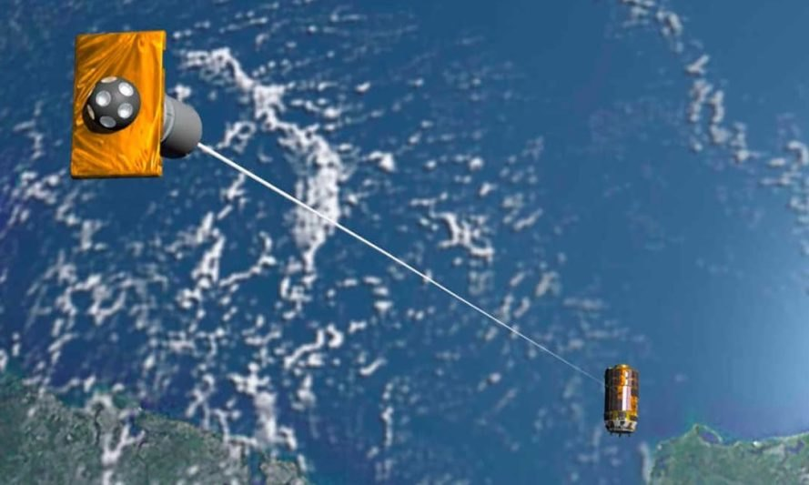

Findings
Multi Tethers
Nowdays Single tether system has been used to deorbit the debris and we propose a new system which has multi tethers to do the same operation in an efficient way. We try to achieve the same potential of a single tether with multi tether system. Different parameters such as force,length,current are compared and the results obtained are similar. Hence of using multi tether system we can reduce the breakage of tethers and the goal of deorbiting can be done successfuly.
Concept of multiple tethers:
Abstract
This research work compares the working of multiple bare electrodynamic tethers versus a long single tethered system on a satellite in Low Earth Orbit(LEO) for end of life de-orbiting to combat the further formation of space debris. The paper demonstrates the use of several equal length short tethers, placed in parallel orientation on one face of the satellite. Tethers have proved to be efficient passive de-orbiting systems, yet tethers used in previous missions have been subjected to damage due to their extremely large lengths. The paper also upholds the fact that the same drag force can be produced using multiple tethers just like a single long tether. The calculation of de-orbiting time are presented along with the effects of initial induced voltage and current. To obtain the maximum efficiency from each short tether optimum spacing distances between the tether.
Research Paper : Click here to download